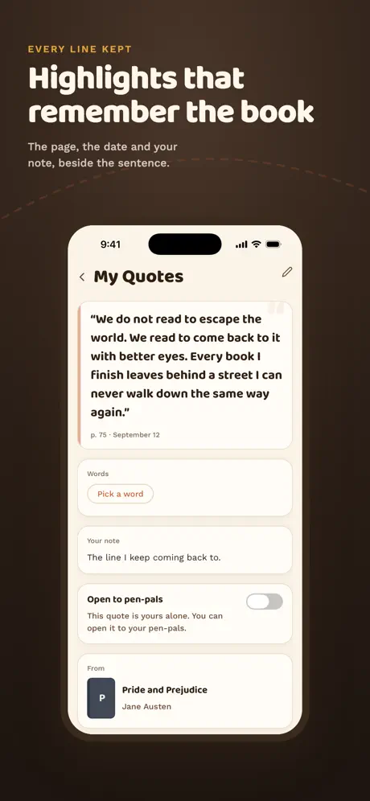
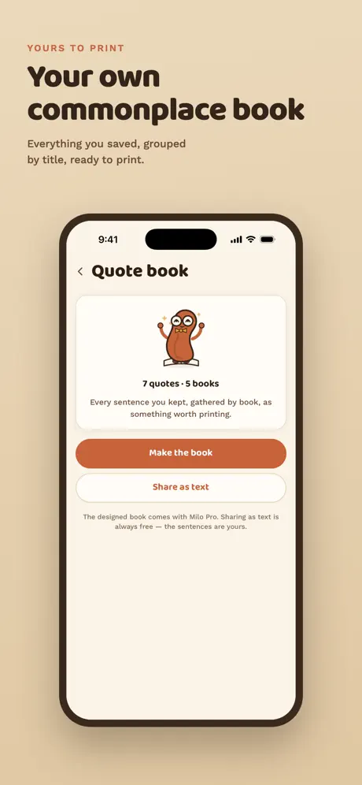
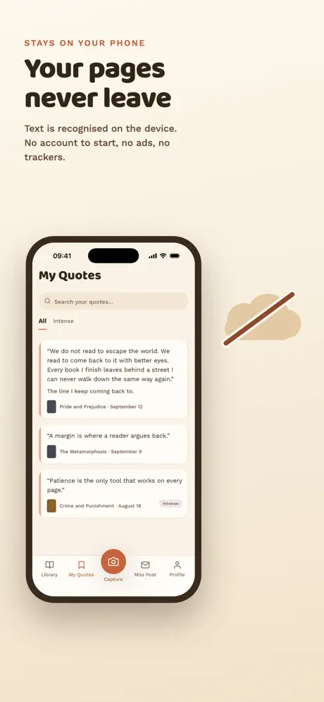

MyApps Studio
MyApps Studio
← All work

Milo
Keep the sentences, not just the books.
iOSBooks
A reading journal built around the moment a line stops you. Photograph the page, and Milo reads the text off it and keeps the sentence along with the book, the date and the page.





What it does
Catch a line in seconds
Text is recognized on the phone, so the photo of the page never has to leave it.
Word notebook
Tap a word in a quote to see what it means in that sentence, in your language, whatever language the book is in.
Milo Post
Seal a quote and watch it fly across a world map to a reader somewhere else. It arrives hours later, and they can write back.
Shelves that stay honest
Track what you are reading, what is next and what you finished, without turning reading into bookkeeping.
How it's built
- Expo SDK 57 with on-device OCR. Photos of pages stay on the phone.
- Supabase for sync, letters and analytics. No third-party analytics SDK.
- Word definitions are moving to Claude (Haiku 5.5): 29/30 on our multilingual eval. They ship in the next release.
- Nothing is sent to an AI until the reader agrees, and the consent names the provider (Apple 5.1.2(i)).
- UI in 11 languages, including Traditional Chinese, Japanese and Korean.